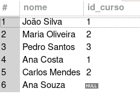
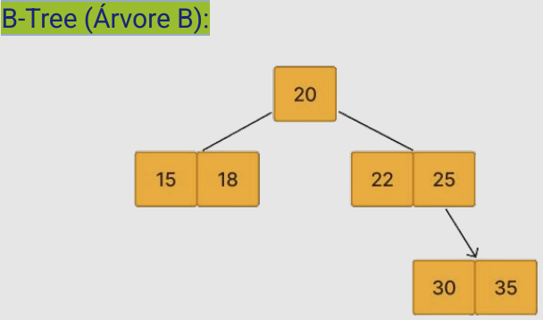
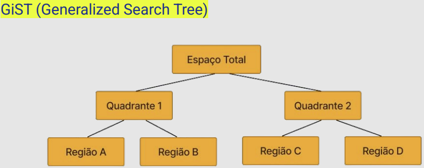
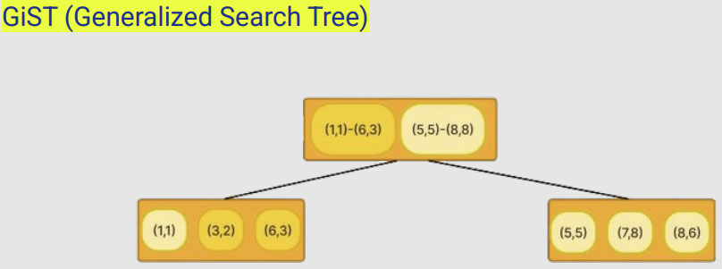
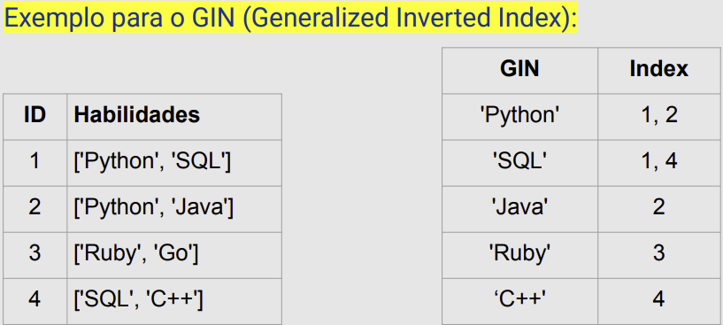
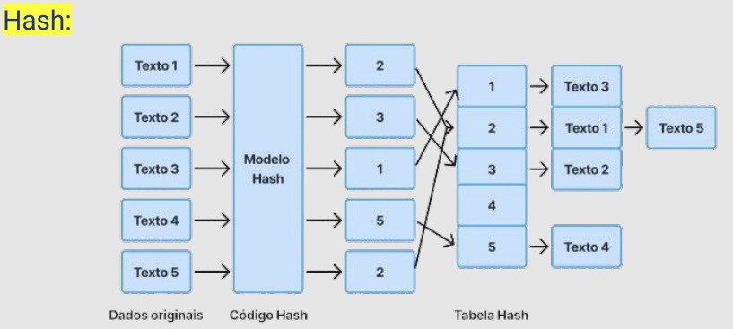

Disciplinas
LABORATÓRIO DE BANCO DE DADOS. Concluído
Materiais
[UFMS Digital] Laboratório de Banco de Dados - Módulo 1 - Unidade 2 sendProf.ª ministrante: Esteice Janaina Santos Batista.
Conteúdo
Experiência prática com sistemas de gerenciamento de banco de dados (SGBD), com foco na aplicação dos comandos SQL.
-
Instalação

Consultar tabelas.
A consulta SELECT é a instrução mais usada na SQL.
Ela permite consultar e extrair dados de uma ou mais tabelas em um banco de dados, retornando os resultados em forma de tabela.
SELECT coluna1, coluna2
FROM nome_da_tabela
WHERE condição;
- SELECT: Define as colunas a serem exibidas.
- FROM: Define a tabela de onde os dados serão extraídos.
- WHERE: Define a condição (filtro) para selecionar os dados desejados.
SELECT nome, email
FROM alunos
WHERE idade > 18;
Consulta o nome e e-mail dos alunos que têm mais de 18 anos.
Se desejar que todas as colunas de uma tabela sejam retornadas, basta usar o * após o SELECT.
SELECT * FROM alunos;
Retorna todas as colunas da tabela alunos (nome, email, idade, etc.).
Operadores Comuns na Cláusula WHERE:
- = Igualdade.
- <> ou != Diferente.
- > e < Maior e menor.
- BETWEEN: Dentro de um intervalo de valores.
- LIKE: Busca por padrões (ex: %abc%).
SELECT nome
FROM alunos
WHERE nome LIKE 'João%';
Retorna os alunos cujos nomes começam com "João".
SELECT nome, idade
FROM alunos
WHERE idade BETWEEN 18 AND 25;
A consulta retorna o nome e a idade dos alunos que têm entre 18 e 25 anos, inclusive.
Consultar tabelas: JOIN.
O JOIN é usado para combinar dados de duas ou mais tabelas com base em uma condição que relaciona colunas dessas tabelas.
Ele permite consultar e unir dados de diferentes fontes em um banco de dados relacional.
O INNER JOIN retorna apenas as linhas que têm correspondências em ambas as tabelas com base na condição de junção.
SELECT coluna1, coluna2
FROM tabela1
INNER JOIN tabela2 ON tabela1.coluna_comum = tabela2.coluna_comum;
Neste exemplo, o comando retorna o nome dos alunos que estão matriculados e o respectivo ID do curso. O INNER JOIN combina as tabelas alunos e matriculas onde os IDs dos alunos são correspondentes nas duas tabelas. Somente os alunos com uma matrícula são retornados.
SELECT alunos.nome, matriculas.id_curso
FROM alunos
INNER JOIN matriculas ON alunos.id_aluno = matriculas.id_aluno;
Agora, vamos adicionar outra tabela, cursos, para obter também o nome do curso:
SELECT alunos.nome, cursos.nome_curso
FROM alunos
INNER JOIN matriculas ON alunos.id_aluno = matriculas.id_aluno
INNER JOIN cursos ON matriculas.id_curso = cursos.id_curso;
O LEFT JOIN retorna todas as linhas da tabela à esquerda (tabela1), mesmo que não haja correspondência na tabela à direita (tabela2). Se não houver correspondência, os valores da tabela à direita serão NULL.
SELECT coluna1, coluna2
FROM tabela1
LEFT JOIN tabela2 ON tabela1.coluna_comum = tabela2.coluna_comum;
Inserções nas nossas tabelas para o exemplo a seguir:
INSERT INTO alunos (nome)
VALUES ('Ana Souza');
INSERT INTO cursos (nome_curso)
VALUES ( 'Sistemas de Informação');
Vamos buscar todos os alunos, incluindo aqueles que não estão matriculados em nenhum curso, utilizando o LEFT JOIN entre as tabelas alunos e matriculas.
SELECT alunos.nome, matriculas.id_curso
FROM alunos
LEFT JOIN matriculas ON alunos.id_aluno = matriculas.id_aluno;

O RIGHT JOIN retorna todas as linhas da tabela à direita (tabela2), mesmo que não haja correspondência na tabela à esquerda (tabela1). Se não houver correspondência, os valores da tabela à esquerda serão NULL.
SELECT coluna1, coluna2
FROM tabela1
RIGHT JOIN tabela2 ON tabela1.coluna_comum = tabela2.coluna_comum;
Vamos buscar todos os cursos, incluindo aqueles que não têm alunos matriculados, utilizando o RIGHT JOIN entre as tabelas alunos e matriculas.
SELECT alunos.nome, matriculas.id_curso
FROM alunos
RIGHT JOIN matriculas ON alunos.id_aluno = matriculas.id_aluno;
O FULL OUTER JOIN retorna todas as linhas de ambas as tabelas.
Quando não há correspondência entre as tabelas, os valores das colunas sem correspondência são exibidos como NULL.
SELECT coluna1, coluna2
FROM tabela1
FULL OUTER JOIN tabela2 ON tabela1.coluna_comum = tabela2.coluna_comum;
Vamos buscar todos os alunos e todos os cursos, incluindo os alunos que não estão matriculados e os cursos que não têm alunos, utilizando o FULL OUTER JOIN entre as tabelas alunos e matriculas.
SELECT alunos.nome, matriculas.id_curso
FROM alunos
FULL OUTER JOIN matriculas ON alunos.id_aluno = matriculas.id_aluno;
Consultar tabelas: AS.
O AS é uma palavra-chave usada em SQL para renomear colunas (atribuir um alias/nome alternativo) ou tabelas temporariamente no resultado de uma consulta.
O uso de AS torna o resultado da consulta mais legível e compreensível, especialmente quando se deseja dar um nome mais significativo às colunas ou quando se trabalha com junções entre tabelas com nomes de colunas semelhantes.
SELECT coluna_original AS alias_coluna
FROM nome_da_tabela;
coluna_original: O nome da coluna na tabela original.
alias_coluna: O novo nome (alias) que será exibido no resultado da consulta.
SELECT alunos.nome AS aluno, cursos.nome_curso AS curso
FROM alunos
INNER JOIN matriculas ON alunos.id_aluno = matriculas.id_aluno
INNER JOIN cursos ON matriculas.id_curso = cursos.id_curso;
alunos.nome AS aluno: O nome da coluna nome da tabela alunos será exibido no resultado como aluno.
cursos.nome_curso AS curso: O nome da coluna nome_curso da tabela cursos será exibido como curso.
Para refletir.
Como selecionar todos os nomes dos alunos e o nome de seus cursos, incluindo os alunos que não estão vinculados a nenhum curso?
SELECT alunos.nome AS nome_aluno, cursos.nome_curso
FROM alunos
LEFT JOIN matriculas ON alunos.id_aluno = matriculas.id_aluno
LEFT JOIN cursos ON matriculas.id_curso = cursos.id_curso;
Como selecionar todos os nomes dos alunos e o nome de seus cursos, incluindo os cursos que não possuem alunos matriculados?
SELECT alunos.nome AS nome_aluno, cursos.nome_curso
FROM alunos
RIGHT JOIN matriculas ON alunos.id_aluno = matriculas.id_aluno
RIGHT JOIN cursos ON matriculas.id_curso = cursos.id_curso;
Como selecionar todos os nomes dos alunos e o nome de seus cursos, incluindo os alunos que não estão matriculados em nenhum curso e cursos que não possuem nenhum aluno matriculado?
SELECT alunos.nome AS nome_aluno, cursos.nome_curso
FROM alunos
FULL OUTER JOIN matriculas ON alunos.id_aluno = matriculas.id_aluno
FULL OUTER JOIN cursos ON matriculas.id_curso = cursos.id_curso;
Consultas: Distinct.
O DISTINCT é uma palavra-chave em SQL usada para remover valores duplicados de uma consulta. Quando você utiliza DISTINCT, apenas as linhas com valores únicos para as colunas especificadas serão retornadas.
SELECT DISTINCT coluna1, coluna2
FROM nome_da_tabela;
Imagine que você tem as tabelas matriculas e cursos e deseja selecionar os diferentes cursos em que os alunos estão matriculados, sem repetir os mesmos cursos.
SELECT DISTINCT cursos.nome_curso
FROM cursos
INNER JOIN matriculas ON cursos.id_curso = matriculas.id_curso;
Consultas: ordenação de resultados.
A cláusula ORDER BY é usada para ordenar os resultados de uma consulta com base nos valores de uma ou mais colunas.
A ordenação pode ser feita em ordem crescente (padrão) ou ordem decrescente.
SELECT coluna1, coluna2
FROM nome_da_tabela
ORDER BY coluna1 [ASC|DESC], coluna2 [ASC|DESC];
- ORDER BY: Define a coluna pela qual os resultados serão ordenados.
- ASC: Ordem crescente (padrão). Não precisa ser explicitamente especificado.
- DESC: Ordem decrescente.
SELECT nome, idade
FROM alunos
ORDER BY nome ASC;
SELECT nome, idade
FROM alunos
ORDER BY idade DESC;
SELECT nome, idade
FROM alunos
ORDER BY idade ASC, nome ASC;
Consultas: funções agregadas.
As funções agregadas em SQL são usadas para realizar cálculos em um conjunto de valores e retornar um único valor.
Elas são amplamente utilizadas em consultas que envolvem agrupamento de dados com a cláusula GROUP BY.
As funções agregadas ajudam a resumir grandes volumes de dados.
Principais Funções Agregadas:
- COUNT(): Conta o número de linhas ou valores.
- SUM(): Calcula a soma dos valores de uma coluna numérica.
- AVG(): Retorna a média dos valores de uma coluna numérica.
- MAX(): Retorna o valor máximo de uma coluna.
- MIN(): Retorna o valor mínimo de uma coluna.
Retorna o número total de alunos na tabela alunos:
SELECT COUNT(*) AS total_alunos
FROM alunos;
Calcula a média das notas de uma tabela de avaliações:
SELECT AVG(nota) AS media_notas
FROM notas;
Consultas: agrupamentos.
O GROUP BY é usado em SQL para agrupar linhas que têm os mesmos valores em colunas específicas.
Ele é comumente usado com funções agregadas para realizar cálculos em cada grupo de linhas.
SELECT coluna1, função_agregada(coluna2)
FROM nome_da_tabela
GROUP BY coluna1;
Vamos supor que temos uma tabela de matriculas e queremos saber quantos alunos estão matriculados em cada curso:
SELECT cursos.nome_curso, COUNT(matriculas.id_aluno) AS total_alunos
FROM cursos
LEFT JOIN matriculas ON cursos.id_curso = matriculas.id_curso
GROUP BY cursos.nome_curso;
Consultas: filtros em agrupamento.
O HAVING é usado para filtrar grupos criados pelo GROUP BY.
Diferente da cláusula WHERE, HAVING é aplicado após o agrupamento, permitindo filtrar grupos com base em condições nas funções agregadas.
SELECT coluna1, função_agregada(coluna2)
FROM nome_da_tabela
GROUP BY coluna1
HAVING condição;
Vamos modificar o exemplo anterior para exibir apenas cursos com mais de 1 aluno matriculado:
SELECT cursos.nome_curso, COUNT(matriculas.id_aluno) AS total_alunos
FROM cursos
LEFT JOIN matriculas ON cursos.id_curso = matriculas.id_curso
GROUP BY cursos.nome_curso
HAVING COUNT(matriculas.id_aluno) > 1;
Consultas: verificação IN.
IN e NOT IN são operadores utilizados para comparar um valor com uma lista de valores específicos ou com o resultado de uma subconsulta.
Eles são usados para verificar se um valor existe ou não em um conjunto de valores.
SELECT coluna1
FROM nome_da_tabela
WHERE coluna1 IN (valor1, valor2, valor3);
Consultas: subconsulta.
Subconsulta, também conhecida como consulta aninhada, é uma consulta SQL que é inserida dentro de outra consulta SQL.
A subconsulta pode ser usada para fornecer dados à consulta principal ou para comparar valores retornados pela subconsulta com aqueles da consulta externa.
- Subconsultas de Linha Única: Retornam apenas uma linha e uma coluna.
- Subconsultas de Múltiplas Linhas: Retornam várias linhas, mas apenas uma coluna.
- Subconsultas de Múltiplas Colunas: Retornam mais de uma coluna.
Imagine que temos uma tabela de alunos e matriculas. Se quisermos encontrar o nome dos alunos matriculados no curso de ID 2, usamos uma subconsulta para encontrar os IDs dos alunos matriculados no curso, e então a consulta externa seleciona os nomes.
SELECT nome
FROM alunos
WHERE id_aluno IN (SELECT id_aluno FROM matriculas
WHERE id_curso = 2);
SELECT nome
FROM alunos
WHERE id_aluno IN (SELECT id_aluno FROM matriculas WHERE id_curso = 2);
A subconsulta retorna os IDs dos alunos matriculados no curso de ID 2.
A consulta externa usa o operador IN para buscar os nomes dos alunos cujo id_aluno está presente na lista de IDs retornada pela subconsulta.
Consultas: verificação em subconsultas.
EXISTS e NOT EXISTS são usados para testar se existe ou não uma linha correspondente no resultado da subconsulta.
SELECT coluna1
FROM nome_da_tabela
WHERE EXISTS (subconsulta);
- EXISTS: Retorna TRUE se a subconsulta retornar pelo menos uma linha.
Retorna os nomes dos alunos que têm matrícula em algum curso.
SELECT nome
FROM alunos
WHERE EXISTS (SELECT 1 FROM matriculas WHERE alunos.id_aluno = matriculas.id_aluno);
Visão de Banco de Dados.
Uma view (ou visão) é uma consulta armazenada que atua como uma tabela virtual.
Ela não armazena os dados diretamente, mas sim a consulta que gera os dados toda vez que a view é acessada.
As views permitem simplificar consultas complexas, melhorar a segurança e organizar a visualização de dados.
Uma view armazena a consulta e executa essa consulta sempre que a view é acessada.
Não contém dados reais, mas o resultado de uma consulta.
As views podem ser usadas repetidamente em consultas, sem a necessidade de reescrever a lógica.
As views podem restringir o acesso a dados sensíveis, exibindo apenas as colunas e linhas necessárias para cada usuário.
CREATE VIEW nome_da_view AS
SELECT coluna1, coluna2
FROM nome_da_tabela
WHERE condição;
- CREATE VIEW: Comando para criar a view.
- nome_da_view: Nome da view que você deseja criar.
- SELECT: A consulta SQL que define o que a view vai exibir.
Imagine que você tem uma tabela de alunos e quer criar uma view que exibe apenas os alunos maiores de 18 anos.
CREATE VIEW view_alunos_maiores AS
SELECT nome, idade
FROM alunos
WHERE idade >= 18;
A view view_alunos_maiores exibe o nome e a idade dos alunos que têm 18 anos ou mais.
Agora, toda vez que você acessar essa view, ela executará a consulta definida.
Uma vez criada, você pode consultar a view como se fosse uma tabela normal:
SELECT * FROM view_alunos_maiores;
Imagine que você quer alterar a view para incluir apenas alunos maiores de 21 anos.
Em vez de usar DROP VIEW e depois recriar a view, você pode usar CREATE OR REPLACE VIEW para substituí-la diretamente:
CREATE OR REPLACE VIEW view_alunos_maiores AS
SELECT nome, idade
FROM alunos
WHERE idade >= 21;
Índices.
Definição: Um índice é uma estrutura de dados que melhora a velocidade de operações de consulta em uma tabela.
Objetivo: Facilitar a busca de informações em uma tabela sem precisar percorrer todas as linhas.
Funcionamento Básico: Similar ao índice de um livro, que aponta para onde encontrar informações específicas sem precisar ler todo o conteúdo.
Tipos de índices no PostgreSQL.
- B-Tree (Árvore B): o tipo de índice mais comum, utilizado para comparações de igualdade e intervalos de valores (=, >, menor).
- GiST (Generalized Search Tree): Ideal para buscas complexas, como consultas espaciais, com operadores mais avançados.
- GIN (Generalized Inverted Index): Usado para acelerar consultas com muitas colunas ou dados como arrays e buscas de texto completo.
- Hash: Utilizado para comparações de igualdade (=), mas com desempenho inferior ao B-Tree na maioria dos casos.
O tipo de índice mais comum, utilizado para comparações de igualdade e intervalos de valores (=, >, menor).
Funciona como uma árvore que organiza os dados de forma ordenada, permitindo encontrar rapidamente um valor específico.
Quando é usada?: Quando você quer comparar valores. Por exemplo, se você estiver buscando por alunos que tenham idade maior que 20 anos (> 20) ou igual a 20 (= 20), o índice B-Tree pode acelerar essa busca.

Exemplo da B-Tree (Árvore B) no SQL: vamos supor que temos uma tabela de funcionarios e queremos acelerar as consultas relacionadas à coluna salario.
CREATE INDEX idx_salario_btree ON funcionarios(salario);
SELECT nome, salario
FROM funcionarios
WHERE salario > 6000;
A tabela funcionarios contém um campo de salario numérico.
Criamos um índice B-Tree na coluna salario com o comando CREATE INDEX.
Quando você faz uma consulta buscando por salários maiores que 6000, o PostgreSQL usa o índice B-Tree para encontrar rapidamente os resultados, em vez de percorrer toda a tabela.
GiST (Generalized Search Tree):
É uma estrutura de índice projetada para suportar consultas complexas que vão além de comparações simples de igualdade, como em bancos de dados que lidam com dados espaciais, documentos textuais, gráficos, ou outros tipos de dados que possuem mais complexidade
Objetivo: Facilitar a execução de consultas complexas, como "busca de proximidade" (distância geográfica), "interseção" (geometria), entre outros.
Uso comum: Consultas que envolvem operações mais avançadas, como encontrar todos os pontos de interesse dentro de uma determinada área geográfica (consultas espaciais), realizar buscas de texto completo, ou consultas que envolvem formas e interseções.


Exemplo do índice GiST (Generalized Search Tree) no SQL
Cenário: tabela que armazena a localização dos funcionários usando coordenadas geométricas (latitude e longitude).
Aplicamos o índice GiST para acelerar buscas espaciais.
CREATE TABLE localizacoes_funcionarios (
id SERIAL PRIMARY KEY,
nome VARCHAR(100),
localizacao GEOGRAPHY(POINT, 4326) -- Latitude e Longitude
);
INSERT INTO localizacoes_funcionarios (nome, localizacao)
VALUES
('Ana', ST_GeographyFromText('POINT(-46.6333 -23.5505)')), -- SP
('Carlos', ST_GeographyFromText('POINT(-43.1729 -22.9068)')); -- RJ
CREATE INDEX idx_localizacao_gist ON localizacoes_funcionarios
USING GiST (localizacao);
SELECT nome
FROM localizacoes_funcionarios
WHERE ST_DWithin(localizacao,
ST_GeographyFromText('POINT(-46.6333 -23.5505)'), 100000); -- Raio
de 100 km de SP
No exemplo do índice GiST (Generalized Search Tree) no SQL:
- Estamos armazenando a localização dos funcionários usando o tipo de dado Geography (coordenadas de latitude e longitude).
- Criamos um índice GiST na coluna localizacao com o comando CREATE INDEX ... USING GiST.
- A consulta usa a função ST_DWithin para encontrar todos os funcionários que estão dentro de um raio de 100 km a partir de São Paulo (-46.6333, -23.5505) com o índice GiST para acelerar a busca espacial, verificando apenas as áreas próximas.
É um índice que trabalha com conjuntos de dados complexos, como listas, arrays, ou até mesmo documentos que contêm múltiplas palavras.
Ele permite buscas rápidas em colunas que contêm múltiplos valores, como arrays ou textos, otimizando operações como a verificação de existência de um valor ou buscas baseadas em diversos termos.
Array e Listas: otimizar consultas que verificam se um determinado valor está presente na lista.
Buscas de Texto Completo: acelerar busca por palavras específicas em documentos armazenados em uma coluna
Chaves e Dados Complexos: colunas que contêm objetos JSON ou outros tipos de dados que podem ser complexos e precisam ser analisados de forma eficiente.
Como funciona o GIN (Generalized Inverted Index):
Imagine uma coluna de texto que contém várias palavras em cada entrada, ou uma coluna de array que armazena várias tags ou valores em uma linha. O GIN cria uma estrutura que indexa cada elemento separadamente e armazena os locais onde esses elementos aparecem.
Ao invés de percorrer toda a tabela para encontrar uma palavra ou um valor específico, o GIN rapidamente encontra os documentos ou linhas que contêm aquele termo ou valor.
CREATE TABLE funcionarios ( id serial PRIMARY KEY, nome VARCHAR(100), habilidades TEXT[]);
Alguns funcionários podem ter várias habilidades listadas em um array na coluna habilidades. Por exemplo:
INSERT INTO funcionarios (nome, habilidades)
VALUES ('Ana', ARRAY['SQL', 'Python', 'Java']), ('Carlos', ARRAY['C++', 'Python']) ;
Criação de um índice GIN na coluna habilidades:
CREATE INDEX idx_habilidades_gin ON funcionarios USING GIN (habilidades);
SELECT nome
FROM funcionarios
WHERE habilidades @> ARRAY['Python'];

Agora, imagine que você quer encontrar rapidamente todos os funcionários que têm a habilidade 'Python'.
Sem um índice GIN, a busca teria que percorrer todas as linhas e verificar se cada array contém 'Python'.
Com um índice GIN, o banco de dados sabe exatamente onde 'Python' aparece e pode realizar a consulta muito mais rápido.
Hash:O índice Hash é uma estrutura de dados que mapeia valores para uma localização específica no armazenamento, de forma que as buscas por igualdade (como =) sejam muito rápidas.
No contexto de bancos de dados, o índice Hash funciona bem para consultas que fazem comparações exatas.
No entanto, ele não é tão eficiente para operações de intervalo (como >, menor, BETWEEN), onde índices como B-Tree são mais apropriados.
Um índice Hash usa uma função de "hash" para transformar um valor de uma coluna (como um número ou texto) em uma chave única, que aponta para o local onde esse valor está armazenado.
Por exemplo, se você procurar um número de identificação específico ou um valor exato, o índice Hash pode rapidamente localizar esse valor sem ter que percorrer toda a tabela.

CREATE INDEX nome_do_indice ON nome_da_tabela USING HASH (coluna);
CREATE INDEX idx_alunos_email_hash ON alunos USING HASH (email);